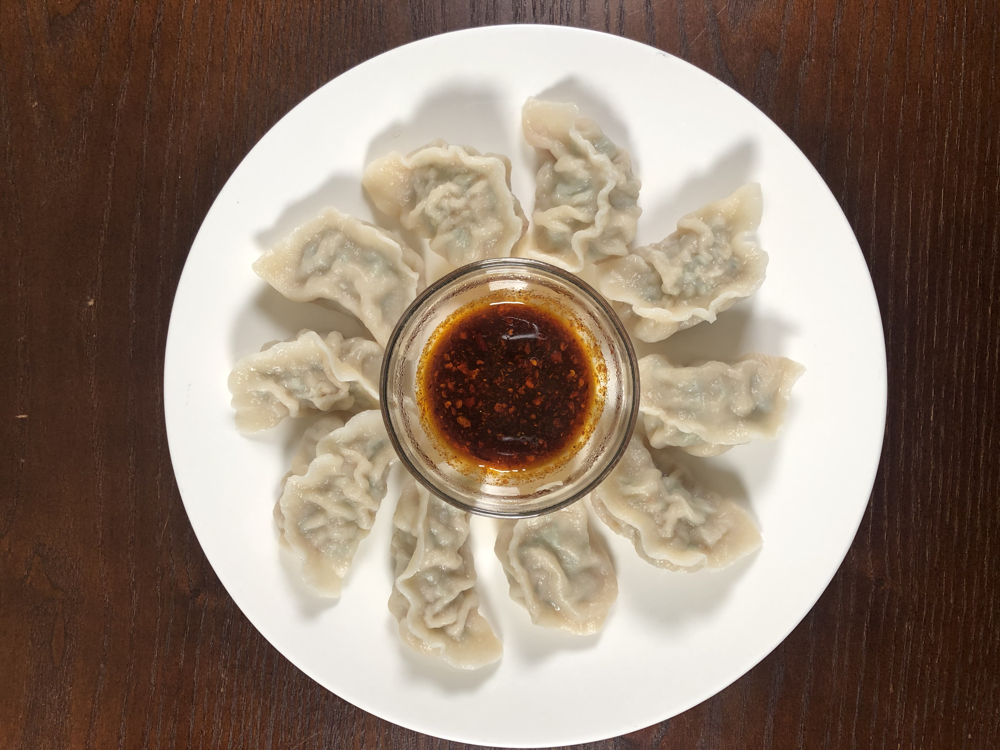

Zhong Shui Jiao (Pork dumplings with Chili Sauce)
- Part I: Spicy pepper/chili oil
- Part II: Fu Zhi Jiang You (seasoned soy sauce)
- Part III: Pork Filling

Dumpling
Part 2: Fu Zhi Jiang You (seasoned soy sauce)
Ingredients
- 500g Soy Sauce
- 150g Water
- 5g Star anise
- 5g Cinnamon Sticks
- 3g Sani
- 5g Black Cardamom, whole
- 3g Bay Leaves
- 10g ginger, whole
- 10 g green onion, cut in half
- 400g Brown Sugar
- 15g Tian Miang Jiang Sauce
Directions
- Add water and dry seasoning to wok. Bring to a boil and reduce to a simmer.
- Add soy sauce and brown sugar to wok and continue to simmer. Add sweet sauce and simmer for about 2 hours. The sauce will get thicker and sticky.